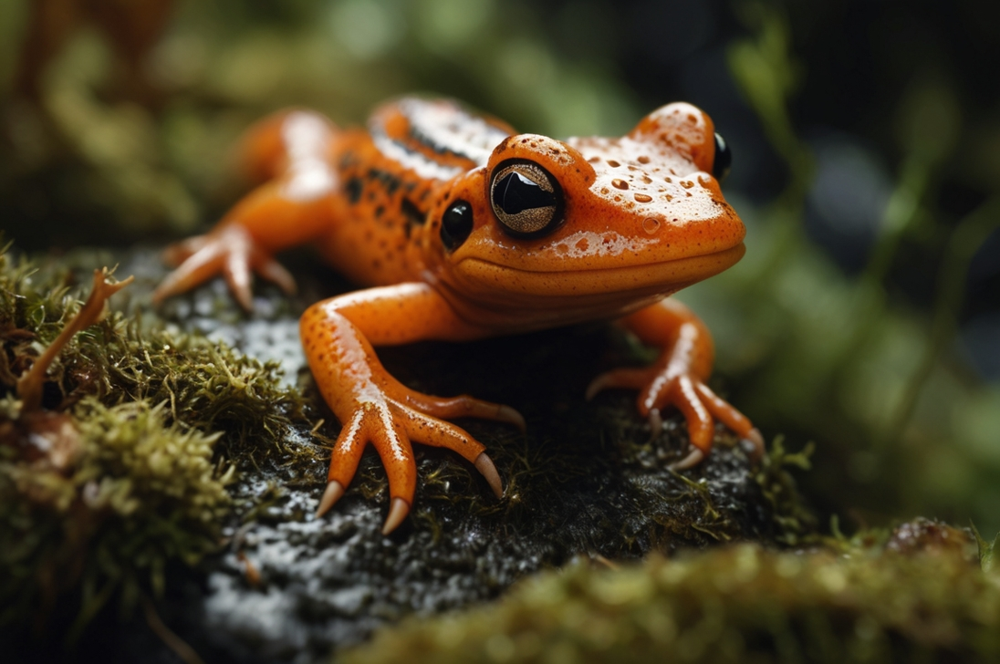

Mlok
„Alchymista ticha pod listy kapradí“

🦎 „Kde jiní utíkají, on zůstává a čte stopy.“
- Povaha: Zvědavý, pomalý, hloubavý
- Bydliště: Vlhká zákoutí mezi kamením
- Oblíbená činnost: Pozorování kapek rosy a zaniklých cest
Jeho kůže září jako poklad schovaný v mlze. Nikdy nejde rychle, ale vždy ví kam. Je to tvor, který čte zem jako knihu a občas vypráví tichou pohádku z podzimního listí. Mlok není hrdina boje, je hrdina klidu.